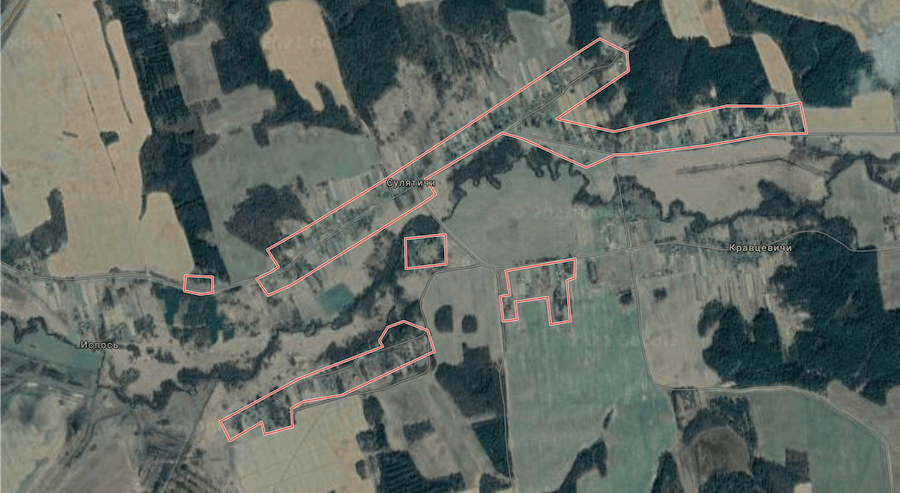
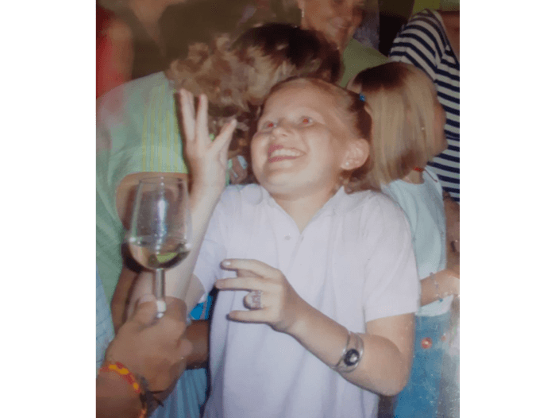
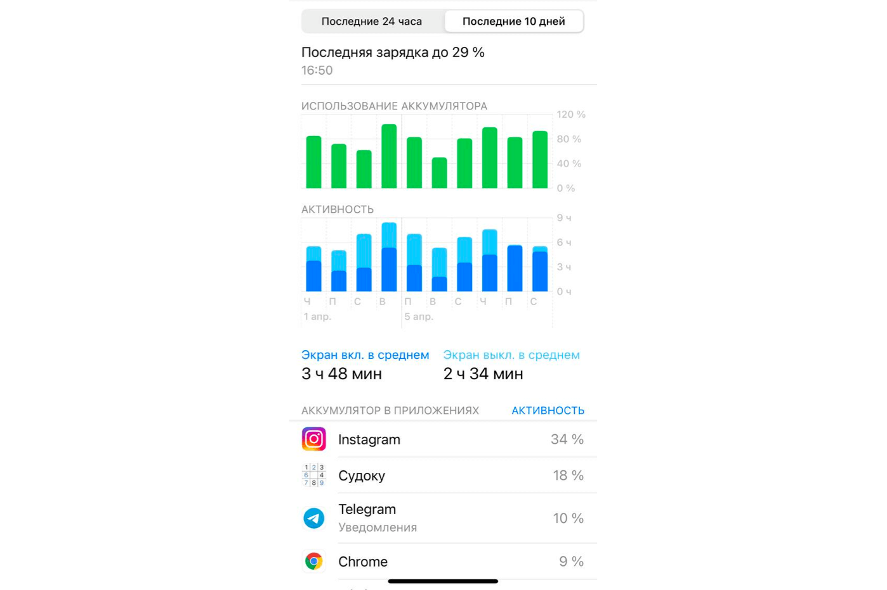
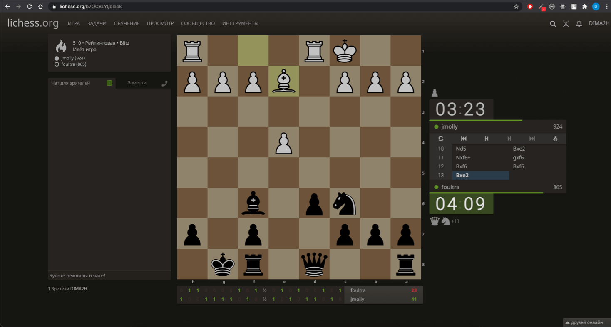
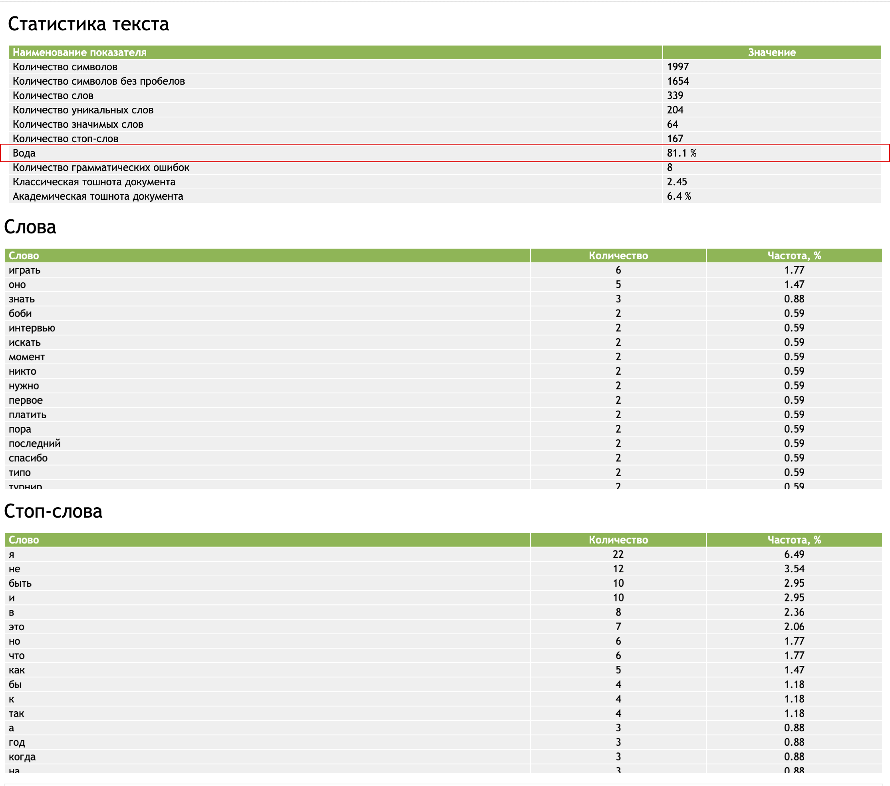

foultra
11 Апреля, 2021
Имя и Фамилия: Юлия Бахар
Место рождения: Сулятичи
Возраст: 25 лет
Семейное положение: Не замужем
У Юли в семье 6 детей, это чуть меньше чем у нас участников в турнире, поэтому соревновновательный элемент в ее жизни присутствует с самого детсва.
Место рождения у Юли просто пушка, убедитесь сами

Сулятичи на google maps
Что ж, давайте пообщаемся с foultra
Привет
-Привет
Кем ты хотела стать в детстве?
-Дизайнером одежды и банкиром
А во сколько лет научилась играть в шахматы? И кто научил?
-Папа рассказал, как ходят фигуры, когда было лет 10-12 (точную дату, к сожелению не помню)

Юля 10-11 лет
Расскажешь что-нибудь что мало кто знает о тебе?
-Когда я ездила в Испанию в семью, мне в первые годы не нравился Боби (типо мой испанский отец), но я это от всех скрывала, поэтому я назвала его именем плюшечного барана)))
-никто не знал об этом до сих пор
Где этот баран сейчас?
-он передался в следующее поколение (моему племяннику), после этого момента я перестала отслеживать его судьбу
-а к Боби я уже давно хорошо отношусь)
Какой смысл заложен в твой никнейм?
-вот этого точно не знает никто, даже я
-не надо везде искать смысл)
Пришли скрин с телефона "отчет экранного времени"

Я так понимаю на телефоне в шахматы играешь?
-нет
-вру
-играла
-но мало))
-у меня стоит приложение chess
-там играла иногда
Чем бы ты занималась один год, если тебе платили бы деньги просто так?
-а сколько бы платили?
1500$ ежемесячно
-старалась бы путешествовать и искала бы хобби по душе (пробовала бы всякую фигню, чтобы найти то, что прям цепляет)
-но меня вполне устаривает как я провожу свое время и сейчас с работой
Куда увезли всех шахматисток?
-шахматисток не существует, их придумали феменистки
Мясо любишь?
-к сожалению, люблю. но снова думаю, что надо бросать его есть
Поддерживаю начинание и рекомендую к просмотру новую документалку "seaspiracy"
-спасибо, посмотрю, нужно возвращаться на правильный, по моему мнению, путь
К какому году планируешь стать гроссмейстером и победить Михаила Осипова?
-в том году, когда мне будут платить просто так и не нужно будет работать
за 1 год?
-да, я верю в себя
на какое место рассчитываешь в турнире?
-я планировала первое, но его уже забил Андрей, судя по его интервью. Так что забираю себе скромное второе
а кому больше всего не хочешь проиграть?
-Артему, тут без какой-то особой логики
-я с ним еще не играла, но проигрывать не хочу
как провела межтурнирное время? изучила что-нибудь новое в шахматах?
-решала задачи, изредка играла
-я не учила ничего конкретного и подготовку к этому турниру оставила на последний момент
-вот буду учиться играть в эндшпиле завтра и видеть возможности ставить маты
Серьезное заявление.
(Вопрос без гугла) Кто сейчас топ1 в мировом шахматном рейтинге и какой у него рейтинг +- ?
-ноль идей, я не погружалась в шахматный мир настолько, чтобы узнавать кто и как играет
а рейтинг +- ?
-погуглю чтобы знать
-3500 пусть будет
там будет порядка 2850, наверное
давай посмотрим
(посмотрели)
почти точно )
-ага
-я думала больше, просто на литчессе есть 3000+
-исходя из этого судила
давай сыграем одну партию 3 + 10?
-это как часть интервью?
ну типо.
или давай матч двух объявленных игроков, т.е с Андреем, согласна? за #1 в списке объявленных
если побеждаешь стаешь участником №1
-я решила не показывать противникам свой текущий уровень до турнира
-я буду такой типо “темной лошадкой”
-и будете гадать поднимусь ли я с последнего места
стратегия понятна
посмотрим как ты себя проявишь на турнире
-идет))
ты такой своеобразный андердог с последнего места симпатии болельщиков будут на твоей стороне
-мне будет приятно)

Через час, не сдержав своих слов, Юля уже играла с другим участником турнира. Игра завершилась в ничью
-Петя говорит, что мне пора уже
-а он мужик
-так что что?
-как говорит, так и делаю)
удачи, Юль, с такой позицией тебе по жизни!
- 😂
И Удачи на турнире!
-спасибо! и тебе удачи!
По свежесложившейся традиции я пропустил ответы Юли через анализатор текста
Становится новый лидером по количеству воды